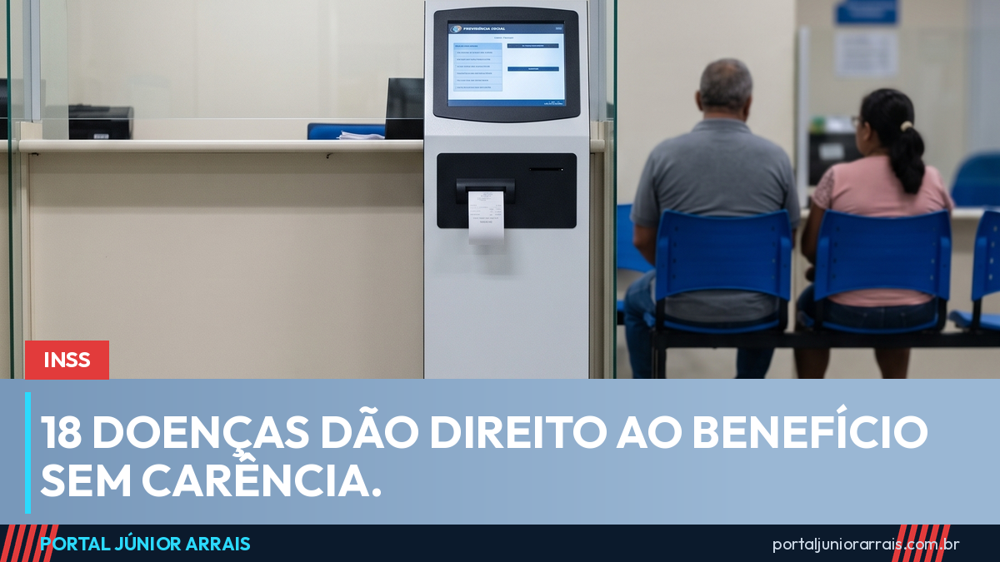

INSS: as 18 doenças que dão direito ao benefício sem carência

Quem pede auxílio por incapacidade temporária — o antigo auxílio-doença — ou aposentadoria por incapacidade permanente precisa, em regra, ter 12 contribuições pagas à Previdência. É a chamada carência. Mas existe uma lista de doenças e condições que derruba essa exigência, e ela hoje tem 18 itens.
A relação foi ampliada em julho de 2026, quando a gestação de alto risco passou a integrar o rol, por portaria interministerial da Previdência e da Saúde.
A lista completa das 18 condições
- tuberculose ativa
- hanseníase
- transtorno mental grave, desde que com alienação mental
- neoplasia maligna (câncer)
- cegueira
- paralisia irreversível e incapacitante
- cardiopatia grave
- doença de Parkinson
- espondilite anquilosante
- nefropatia grave
- estado avançado da doença de Paget (osteíte deformante)
- síndrome da deficiência imunológica adquirida (aids)
- contaminação por radiação
- hepatopatia grave
- esclerose múltipla
- acidente vascular encefálico, em quadro agudo
- abdome agudo cirúrgico
- gestação de alto risco
Estar na lista não basta
Esse é o ponto que mais gera frustração, e é bom entender antes de criar expectativa. O INSS só enquadra a doença como isenta de carência quando o quadro tem evolução aguda e atende a critérios de gravidade.
Evolução aguda quer dizer doença de instalação súbita — e a autarquia exclui expressamente os episódios agudos de uma doença crônica que a pessoa já tinha. Critério de gravidade significa risco iminente de morte ou de perda da função de um órgão ou sistema, com necessidade de cuidado clínico ou cirúrgico.
Na prática, é a documentação médica que decide. Um diagnóstico solto no papel não sustenta o pedido: o que pesa é o relatório que descreve a gravidade, a data em que o quadro começou e por que a pessoa está impedida de trabalhar.
Quem é segurado ainda precisa ser segurado
Dispensar a carência não é o mesmo que dispensar a qualidade de segurado. Quem parou de contribuir e já perdeu o vínculo com a Previdência não entra por essa porta só porque tem uma das 18 doenças. A isenção derruba a contagem das 12 contribuições, não a exigência de estar filiado.
Cuidado com golpe
Toda vez que uma lista dessas circula, aparece gente vendendo "liberação garantida" para quem tem alguma das doenças citadas. O roteiro é sempre parecido: uma mensagem dizendo que o nome saiu numa lista de aprovados, um valor de taxa para "dar entrada com prioridade" e um Pix para pessoa física. Nenhum órgão do governo cobra por análise de benefício, e ninguém consegue garantir resultado de perícia médica.
Se você tem uma dessas condições e não sabe se cumpre os requisitos, o caminho é reunir os laudos e procurar um profissional de sua confiança para avaliar o caso antes de qualquer pedido.
Perguntas frequentes
Acidente também dispensa a carência?
Sim. Acidente de qualquer natureza, inclusive fora do trabalho, e doença profissional ou do trabalho também dispensam as 12 contribuições.
E se eu já tinha a doença quando comecei a contribuir?
Em regra, não há benefício para doença ou lesão que já existia antes da filiação ao INSS. A exceção é quando a incapacidade vem da piora ou do agravamento dessa doença depois que a pessoa já era segurada.
A isenção garante o benefício?
Não. Ela só derruba a exigência das 12 contribuições. Continua sendo preciso ser segurado e passar pela perícia ou pela análise do atestado, que vai dizer se há incapacidade para o trabalho.
Fontes oficiais
- Lei nº 8.213/1991, art. 26, II (casos que dispensam carência)
- Lei nº 8.213/1991, art. 59 (auxílio por incapacidade e doença anterior à filiação)
- Lei nº 8.213/1991, art. 151 (lista original de doenças)
- Meu INSS (site e aplicativo oficiais para pedir, acompanhar e recorrer)
Conteúdo informativo — não substitui orientação individualizada sobre o seu caso.
Assista também
Júnior Arrais · Editor do Portal Júnior Arrais
Comunicador de Ubá (MG). Escreve todos os dias sobre benefícios sociais, INSS, trabalho e economia do dia a dia, a partir do Diário Oficial, de portarias e de fontes oficiais, em linguagem simples. Conheça a linha editorial e a política de correções do portal.